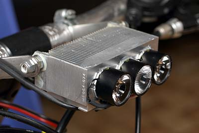
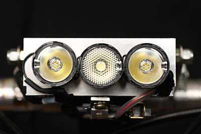
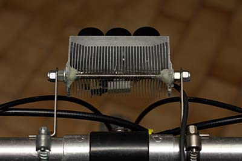
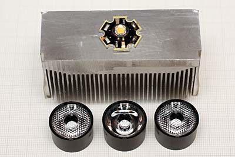
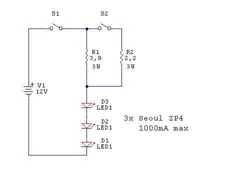
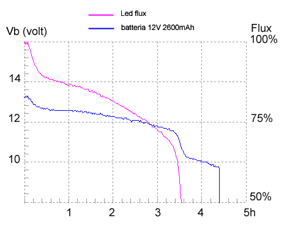

LED & illuminazione
Lampada BIKE-TRILED
3 LED SEOUL ZP4 + FRAEN LENS FSP Soluzione economica per avere molta luce. oltre 2 ore di autonomia con pacco batteria 12V 2600mA "Fai da te" di R.Chirio
Indice della pagina

Settembre 2008.
Tanti mi chiedono una soluzione per avere molta luce senza spendere molto, questa soluzione con tre led Seoul può dare ottimi risultati su strada.
Utilizziamo un radiatore recuperato da CPU, tre Led ZP4 e tre lenti Fraen FSP.
La regolazione della corrente la otteniamo con una sola resistenza in serie alla batteria da 12V.
La potenza sui led è di circa 10W, pertanto siamo vicini ai 6-700 Lumen pari ad una alogena da 50W.
Batteria si può usare una serie di 10 stilo da 2600mA/h oppure anche batterie al piombo con amperaggio maggiore tipo la 12V 7Ah comunemente usata per antifurti.
{kind=link}
Seoul Z-LED P4 white star
power consumption max.: 3,7W
(1000 mA)
luminous flux (typ..): 100 lm (350 mA)
luminous flux (max.): 240 lm (1000 mA)
viewing angle: 130°
color temperature (typ.): 6300K
forward voltage: 3,7V (1000 mA)
housing: waterclear
material: InGaN
operating temperature: -40°C - +85°C
Gruppo ottico.

Gruppo ottico composto da tre lenti FSP con differente angolo di uscita, per meglio distribuire la luce.
In questo caso due lenti Narrow (10°) e una lente Medium (25°) ci daranno molta luce in avanti con una buona illuminazione laterale.
Chi volesse più luce ai lati può montare due lenti Medium Beam e una sola Narrow al centro.
Per ultimo che volesse tutta la luce in avanti può mettere tre lenti Narrow.

In funzione del radiatore usato si possono adattare le staffe di fissaggio. In questo caso ho usato un tirante filettato da 5mm inox
Il Radiatore da 68 x 30mm è sufficiente per raffreddare i 3 led accesi con il mezzo non in movimento, pedalando a 15Km/h la temperatura scende sotto i 30°.

I Led ZP4 vengono fissati al radiatore, semplicemente incollandoli con colla per CPU, si può usare anche del comune silicone trasparente ottenendo buoni risultati, importante usare pochissima colla e premere molto uniformemente il led verso il radiatore per ridurre al minimo lo spessore dell'incollante.
Anche le lenti FSP vengono fissate sopra il led con un po’ di silicone. Importante che la lente sia ben appoggiata e centrata sul led, in particolare le lenti Narrow.
Per migliorare l'appoggio in corrispondenza della saldatura e passaggio cavo sul led, con il saldatore si ricava un po’ di spazio facendo fondere la plastica nera della lente.

Schema elettrico.
Montare i led in serie, usando filo di piccola sezione, per non interferire con la base delle lenti.
La resistenze da 3W si possono incollare sotto il radiatore.
Con l'interruttore S2 possiamo variare la corrente applicata ai led. Con S2 aperto siamo a circa 350mA, quando chiuso siamo a circa 850mA.
La potenza persa sulla resistenza è pari solo al 10% di quella assorbita, il rendimento di conversione è buono, purtroppo la corrente non è stabilizzata, usando comunque accumulatori di buona qualità, la caduta di luce durante la scarica, si fa sentire poco.
Diagramma flusso/durata

Test effettuato in laboratorio, con temp. amb=20°, gruppo led raffreddato con ventola. (Simulando circa 15kmh.)
Dal diagramma possiamo leggere una autonomia di 3,5 ore ottenuta con la resistenza da 3,9ohm.
La misurazione si ferma quando la tensione batteria raggiunge 10,5V cioè quando la batteria è considerata scarica, il flusso è ancora al 50% di quello iniziale.
La caduta di flusso nei primi 30 minuti è dovuta al riscaldamento dei led e all'assestamento tensione batteria. La parte centrale è dovuta al normale scaricarsi della batteria.
Con l'utilizzo del regolatore switching avremo mantenuto costante il flusso al 90% fino a fine carica batteria.
Commenti finali.
- Facile realizzazione con buona prestazione ottica e facile adattamento, semplicemente usando lenti con angolo diverso.
- La configurazione con tre led in serie ci da un buon rendimento di conversione pari al 90%.
- Con pacco batteria 2600mA otteniamo circa 1,8 ore di autonomia a piena potenza e 3,5 ore con la resistenza più bassa da 3,9 ohm.
- Con il deviatore S2 possiamo usare la massima potenza solo quando necessario, pertanto si effettua un buon risparmio di batteria a tutto vantaggio dell'autonomia.
- Con il radiatore in oggetto la temperatura di esercizio è circa 10° maggiore di quella ambiente, questo con movimento, a bici ferma consiglio di spegnere in quanto si raggiungono i 50°.
2007-2008© Roberto Chirio: all rights reserved.